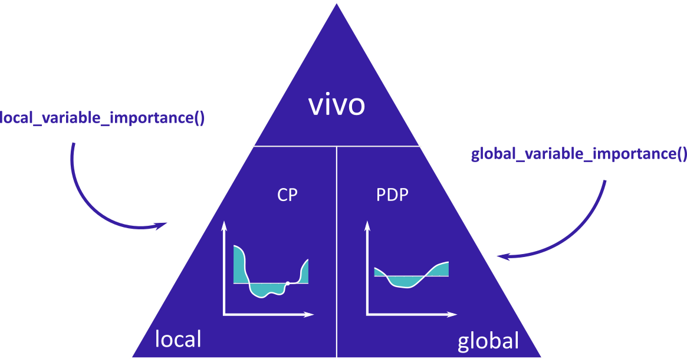

Overview
The vivo package helps to calculate
- instance level variable importance (local sensitivity).
The measure is based on Ceteris Paribus profiles and can be calculated in eight variants. Select the variant that suits your needs by setting parameters: absolute_deviation, point and density.
- model level variable importance (global sensitivity).
The measure is based on Partial Dependence Profiles.
vivo package
The main functions are global_variable_importance() and local_variable_importance().

vivo is a part of DrWhy collection of tools for Visual Exploration, Explanation and Debugging of Predictive Models.
Installation
From CRAN
install.packages("vivo")
From GitHub
install.packages("devtools") devtools::install_github("ModelOriented/vivo")
Intuition
Local variable importance
Ceteris Paribus is a latin phrase meaning „other things held constant” or „all else unchanged”. Ceteris Paribus Plots show how the model response depends on changes in a single input variable, keeping all other variables unchanged. They work for any Machine Learning model and allow for model comparisons to better understand how a black model works.
The measure is based on Ceteris Paribus profiles oscillations. In particular, the larger influence of an explanatory variable on prediction at a particular instance, the larger the deviation along the corresponding Ceteris Paribus profile. For a variable that exercises little or no influence on model prediction, the profile will be flat or will barely change.
References
- Ceteris Paribus profiles
-
ceteris_paribus()fromingredients - Introduction to Ceteris Paribus
-
- Partial Dependence Profiles
-
partial_dependence()fromingredients - Introduction to Partial Dependence Profiles
-
The package was created as a part of master’s diploma thesis at Warsaw University of Technology at Faculty of Mathematics and Information Science by Anna Kozak.